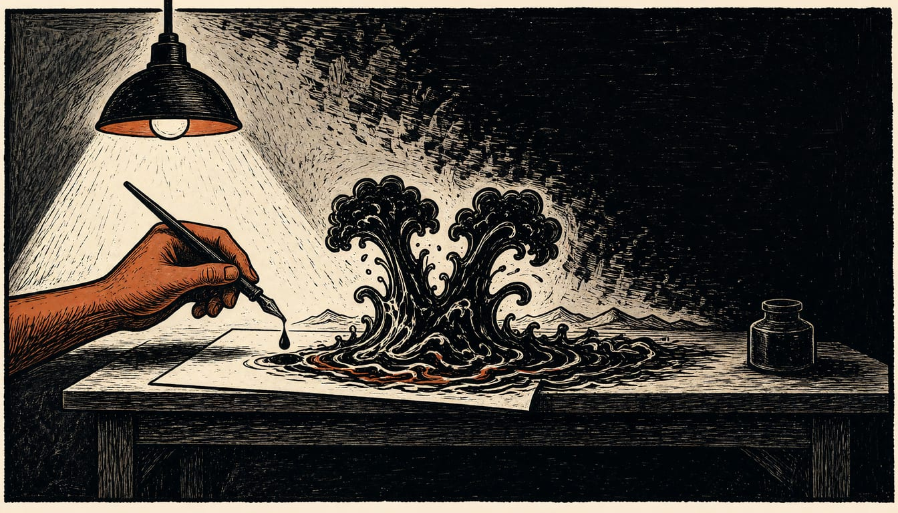

Nuclear strike claim on Iran rests on one unnamed source
Tucker Carlson says an attack may be days away. Trump said on October 16 he would not use nuclear weapons, and the White House keeps all options open.

Tucker Carlson, an American political commentator, says a nuclear strike on Iran may be days away. He wrote on X that the Trump administration, under pressure from Israeli Prime Minister Benjamin Netanyahu, "may be within days of launching a nuclear strike on Iran". The claim spread widely after he posted it on November 1. Newsweek, Al Arabiya and The Independent carried the story.
The Wall Street Journal reported that Gulf allies were told to prepare for intense strikes as soon as November 4. The Independent carried that report; it is disputed. At the same time, Secretary of State Rubio said talks with Iran "never stopped", while Iranian negotiators in Doha push to reopen the Strait of Hormuz.
Carlson named the target in the same post. It is Pickaxe Mountain, a deep underground site near Natanz in central Iran. The site is protected by about 300 feet of solid granite, he wrote. No conventional weapon in the American arsenal can penetrate 300 feet of solid granite, he said in the post. That leaves a nuclear strike as the only military option, in his view. He claimed such a strike would contaminate the Persian Gulf, kill tens of millions and make World War Three inevitable.
The sourcing behind Carlson's post is thin. His claim rests on a single unnamed 'informed observer'. The observer's one line in the post: 'Bibi calls Trump about it every day'. Carlson offered no documents, no named sources and no independent evidence for the claim, as The Independent reported. Axios reported no plans to use nuclear weapons. We don’t have to.'
Carlson's earlier warning
Carlson made a similar warning before. In March, he said Israel had demanded the first American strikes on Iran. Trump answered that the decision was his own, and that he might have forced Israel's hand instead. Rubio said at the time the timing came from the president's own analysis.
Trump has given his own answer.
In a Newsmax interview on October 16 he said he would not use nuclear weapons against Iran.
'I wouldn't use nuclear.
We don't have to,' Trump told Newsmax.
The White House has left the door open.
A White House official said such plans 'may or may not exist', and that Trump keeps all options on the table.
Israel's ambassador to the United Nations, Danny Danon, denies the pressure story.
He told Al Arabiya's W News that "Prime Minister Netanyahu is not pressing President Trump", and said Carlson had spread lies about Israel before.
A report from Axios gave a different picture, citing Israeli and US sources: a "tough" Saturday call in which Netanyahu pressed for a strike right after the midterms.
Trump wanted negotiations to play out.
The Natanz target
Pickaxe Mountain sits in the Karkas range in Isfahan province. It lies about 1.5 km south of the Natanz nuclear complex, roughly 220 km south of Tehran. In February, Iran stated the site was for production and assembly of advanced centrifuges, but inspectors were not granted full access. Analysts suggested then it could be for secure storage of enriched uranium or covert enrichment, with main halls believed more than 100 metres beneath granite. In October, the Institute for Science and International Security studied satellite images. It found entrances and access routes obstructed and assessed the site as not operational.
The Middle East Forum judged, with moderate confidence, that the US is postured for a short, high-intensity campaign after November 3 if the president orders it. But the same assessment, disputed, found the forces thin for anything longer: no third carrier, no second amphibious group, no forward bombers. Rubio said Trump had not decided on fresh strikes and prefers a deal.